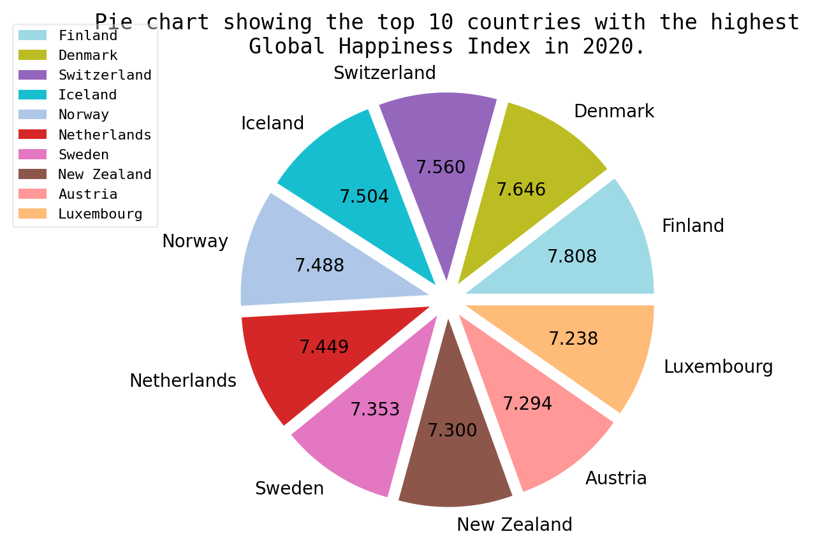

We evaluate the performance of many representative LMMs using our benchmark containing all tasks . We observe that for these abstract images, even advanced LMMs like GPT-4V and Claude3 achieved only 49.5% and 50.1% accuracy on average for all tasks, leaving a significant gap to human-level performance (82.1%).
| Rank | Name | Chart | Table | Road Map | Dashboard | Relation Graph | Flowchart | Visual Puzzles | Layout | Avg |
|---|---|---|---|---|---|---|---|---|---|---|
| - | Human* | 93.5 | 95.1 | 75 | 85.3 | 82.5 | 65.5 | 62.5 | 97.6 | 82.1 |